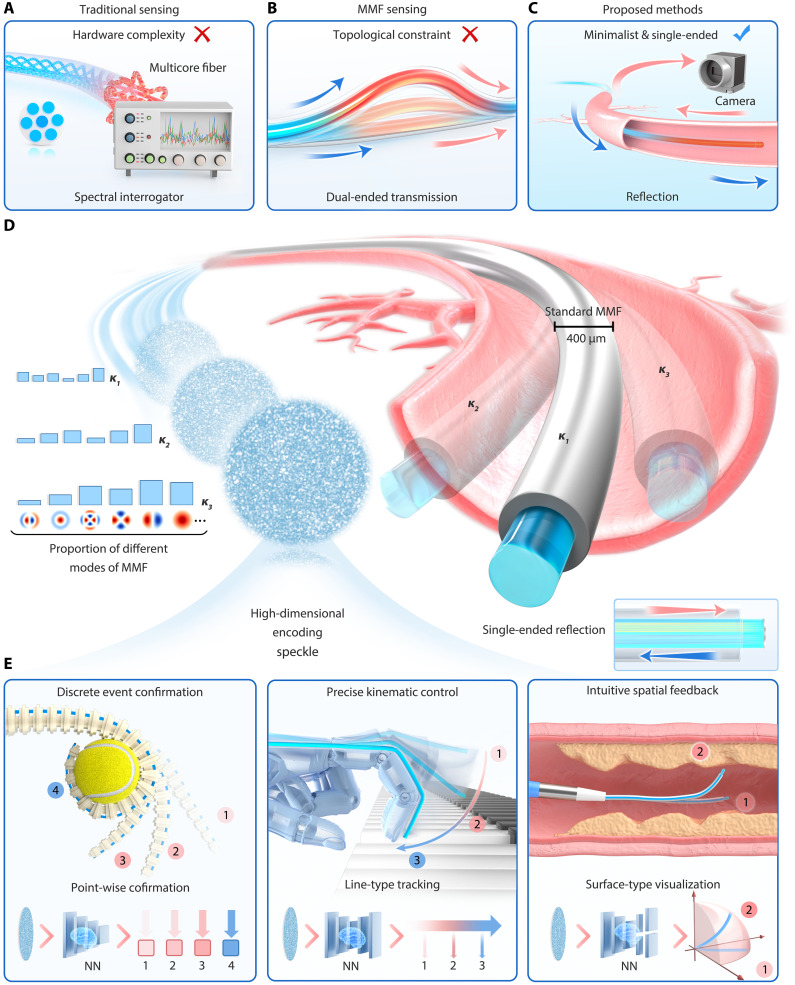

摘要解读
基于单端多模光纤与深度学习的软体机器人多功能形状感知
Deep learning–enabled versatile shape perception for soft robots via single-ended multimode fiber
解读更新 2026-11-10 14:32 · 依据公开摘要整理，未核验全文细节
软体机器人能否准确感知自身形变，是其走向具身智能的重要前提。这项研究以单端多模光纤结合深度学习，让同一物理传感通道承担不同形态感知任务，值得关注的是硬件简化与感知功能扩展如何配合。
文章目录
连续形变感知，难在交互多样与空间受限
软体机器人在不同交互过程中会持续变形，尤其在空间狭窄的介入场景中，感知系统还需要适应有限的集成空间。摘要指出，能够普遍覆盖这些需求的连续形变感知方案仍然缺乏，本文由此聚焦于兼顾集成简洁性与任务适应性的本体感知。
单端反射采集散斑，神经解码适配任务
研究提出基于单端多模光纤（MMF）的深度学习形态感知方法。其极简反射式架构利用光学集成优势，消除对复杂解调单元和远端器件的依赖。这里的简化针对传感架构，并不意味着系统不再需要光学采集与计算。
方法的关键是将看似杂乱的光学散斑场视为编码高维形状信息的数据流，再通过可重配置的神经解码器，将单一物理通道转换为适应不同任务的感知模式。重点不是为每类任务重新配置整套传感硬件，而是利用解码方式承接不同的输出需求。
单端多模光纤如何连接形变编码与多模式感知


图解：原图各面板展示单端多模光纤的感知构想。A：传统传感方案以多芯光纤和光谱解调仪示意硬件复杂性。B：常规双端多模光纤依赖透射通路，形成不利于微创集成的拓扑约束。C：所提方案采用单端反射结构，由相机采集返回光信号，减少远端硬件依赖。D：受限环境中的不同形状改变光纤内部模式耦合，形成不同的高维散斑场；左侧柱形示意表示不同模式所占比例，而非性能比较。E：同一感知接口经神经网络解码，分别支持软体夹持中的点式离散状态确认、灵巧操作中的线式连续形状跟踪，以及血管介入场景中的三维表面形态可视化。
原文图注与出处
Versatile perception via a minimalist single-ended MMF. ( A ) Hardware complexity in traditional sensing methods. ( B ) Topological constraints of conventional dual-ended MMF sensing, where the transmission loop hinders minimally invasive integration. ( C ) Minimalist architecture of the proposed single-ended integration. The reflective design eliminates distal hardware dependencies, enabling a compact sensing interface. ( D ) Speckle-based shape encoding mechanism within a constrained environment. Deformation modulates internal mode coupling, mapping specific geometric shapes ( K 1 , K 2 , and K 3 ) to unique high-dimensional speckle fields. ( E ) Versatile neural perception modes decoded from a single interface. The system spans discrete point-wise state confirmation (e.g., stable grasping with soft arms), continuous line-wise shape tracking (e.g., dexterous manipulation), and 3D surface-wise reconstruction (e.g., navigation of vascular interventional robots).
He Zhaofan et al.
原文图页 · CC BY 4.0从夹持状态到连续形状与三维形态
摘要报告了不同任务下的感知结果：软体夹爪的离散状态确认准确率超过99%；仿生灵巧手的连续形状跟踪实现约5倍的空间分辨率提升；软体手术机器人的三维形态重建达到IoU>0.93。这些指标分别对应不同任务，不能直接合并为统一的性能评价。
作者据此提出，通过计算拓展硬件适应性的通用感知框架，可为软体机器人数字孪生中的闭环控制奠定基础。需要区分的是，摘要报告的是形态感知成果，数字孪生闭环控制是其指向的应用价值，不能据此认定完整闭环系统已经得到验证。
性能数字之外，验证边界仍需进一步阅读
仅凭摘要，无法判断训练与测试的样本规模、数据划分、机器人及工况覆盖范围，也无法明确空间分辨率提升所采用的比较基线。跨设备或跨任务泛化、长期稳定性与实时性能的验证程度同样不能从摘要确定；这些属于当前资料未报告的信息，不代表论文没有开展相关工作。
阅读启发：先厘清感知输出与闭环应用的距离
阅读启发：对于关注智能运维与数字孪生的读者，可进一步关注不同任务的解码器如何配置，以及形态感知输出如何与数字孪生中的状态表征衔接。本文摘要支持讨论感知接口的适应性，但尚不足以将其外推为故障诊断或预测维护效果。
以上为本站阅读启发与建议，不是论文已验证的结论。